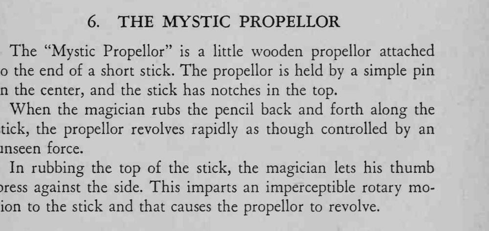

铅笔在短杆上前后摩擦，小螺旋桨就飞快地转起来，像被无形的手推动。
拇指那点暗劲要极轻，只让桨转，别让杆晃动。

The "Mystic Propellor" is a little wooden propellor attached to the end of a short stick. The propellor is held by a simple pin in the center, and the stick has notches in the top. When the magician rubs the pencil back and forth along the stick, the propellor revolves rapidly as though controlled by an unseen force. In rubbing the top of the stick, the magician lets his thumb press against the side. This imparts an imperceptible rotary motion to the stick and that causes the propellor to revolve.